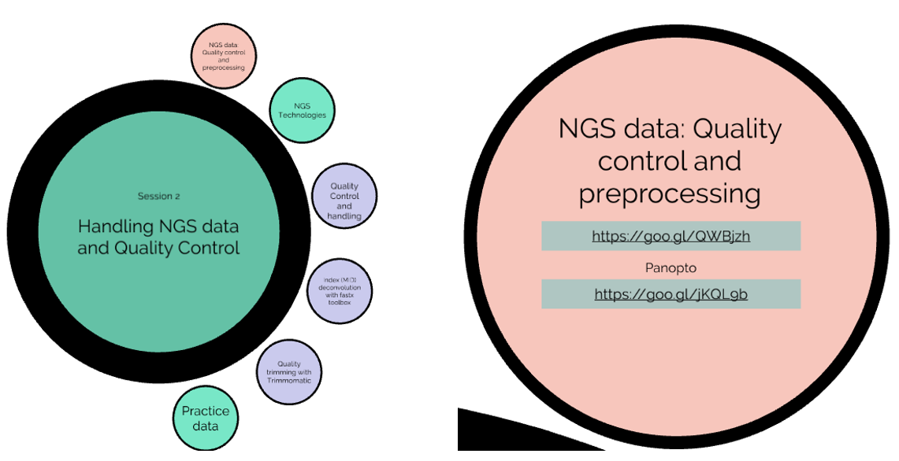

Bioinformatics Teaching Material
This training material is aimed at the novice with no experience of high performance computing (HPC) or bioinformatics. You could be a biologist who wants to up their bioinformatics skills or a physical scientist (trained in computer science, maths or physics) interested in applying your skills to the biological arena - this is where the journey starts.
Big data is a fact of life for biologists whether they are reconstructing ecosystems from fragments of DNA found in the environment (eDNA) or reconstructing neural systems from MRI scans of brains - all walks of biology are exploiting larger and larger data sets. To access these data sets you will need a new set of skills - the time of big data biology is now.
This is a challenging but ultimately exciting and productive area of training, so before we start here are a few pieces of important advice to carry with you on the journey:
- RTFM: Read The - Fantastic - Manual
You will be using very complex software which will (mostly) generate some type of output - you need to know that output is valid and makes sense. By reading the manual and understanding the concepts and theory behind what you are doing you will find it not only easier to use the software but also ensure that your results make sense. Most software comes with a ‘git hub page’, an online guide, a README file, help (accessed via the -h or -help flags) or a manual (man [command]). Sometimes these can be very technical, so don’t be discouraged if you don’t understand it all: just looking through and gleaning bits of information will make a huge difference to your understanding and confidence. These resources have taken a huge amount of effort to generate - look through them, get to know the options, it will really help.
- Keep a notebook and annotate your code
Bioinformatic analyses are in silico experiments, and just as you would not perform an experiment in the lab without making appropriate notes you should always make notes relating to your computational processing. I suggest creating a text file as a note book and use it to record what you did along with the final code/commands you used and any thoughts/ ideas/ pitfalls you had along the way. Lots of informaticians use ‘markdown’ which is some simple text based additions which means your logbooks/notes can easily be rendered to provide structure and formatting. Also always add comments to your code so that you (or anyone else) using the code can follow what you did. In nearly all coding platforms if you put a # in front of a line of text, that line will be ignored and not ‘executed’ as code.
- Be part of the wider Bioinformatics community
There is a global bioinformatics community on-line and actively posting in chat rooms. Often the technical problem you are having or error code that has appeared has been seen before and you can find people have posted solution in old threads. Stack overflow is a great place to start. You can post questions yourself and when you get more experienced find some time to contribute and help others.
Get to know other people on your course/ in your department who do bioinformatics. Having a buddy to discuss ideas and troubleshoot problems with makes a huge difference. Don’t underestimate the value of a fresh pair of eyes when looking for bugs in code! We are all perpetually learning, and even the most experienced bioinformatician can pick up helpful tips and new ideas from talking to others.
From chat rooms to human conversations with your colleagues, I have always gained more by contributing than trying to do things on my own. If you have time to develop your knowledge more formally I highly recommend lab exchanges or attending conferences or ‘hack-a-thons’ - it is fun to meet/learn from the people that develop the amazing code we use (and maybe buy them beer to say thank you !!).
- Google is your friend
Other search engines are also available… whether you are looking for code, troubleshooting a problem or looking for new software a five-minute web search can save a huge amount of time and/or reveal new exciting solutions/software. There are lots of tools on the internet that can help you with coding from YouTube videos to AI chat bots like ChatGPT (see section below). These are all part of the solution - find what works for you but always try and understand what you are doing (you don’t want to find that that great bit of code you copied is actually doing something you didn’t want it to).
- Solving problems is fun but do not forget the question
The coding and problem-solving aspects of bioinformatics can be really seductive and fun (or frustrating and exasperating) and can drawn you in so all you are focused on is solving a gnarly problem with your code or writing a complex workflow. (Who needs Sudoku?) However, DO NOT FORGET the question you started with!!
It often helps to step back (I have a coffee), get some perspective and think about what you are trying to achieve: you could find a new way forward or find what you are doing is not needed. Always keep the big picture in mind of what you want to achieve and how each step will get you towards that goal. It’s easy to get lost in the code, but ultimately it is there to address a biological question - target your analysis to ensure it addressing the answers you seek. I suggest doodling a flow diagram on a physical sheet of paper before you even attempt to wade into typing commands.
And above all - have some fun doing science !!
Artifical intelligence (AI) and Writing Code
There has been a recent explosion in the quality and availability of large language models (LLM), colloquially referred to simply as AI, of which ChatGPT remains the most famous. One of their much-vaunted features is the ability to write code, which begs the question: should I use AI to help me write my bioinformatics scripts? The answer is… depends how you use it. LLMs will quickly churn out code which is (mostly) runnable. However, there is no guarantee that the code does exactly what you think it does. If you want to use AI-generated code, you will need to go through it line by line, checking and testing exactly what is happening; this, obviously, still requires you to understand the code in detail.
One area is which LLMs are likely to prove very useful is in debugging. Error messages usually contain useful information, but not necessarily in a wording accessible to a beginner. LLMs are showing promise for helping to identify and diagnose bugs in code.
If you want some tips for using LLMs to write code, this article from Nature provides some guidance.
Course Handbooks
This training material, or elements of it, are used across a number of courses. The specific handbook for your course will have been provided to you by email. However, if you have been directed to these web pages because you are interested in developing your bioinformatics skills, or come come across them by chance, you should be able to follow the exercises independently without reference to the handbooks.
Bioinformatics Road-Map
Different people learn in different ways and sometimes it is good to see a wider perspective of where the concept or challenge you are facing fits into the wide field. To aid this I have generated a interactive course guide using a tool call ‘prezi’. This is just one way you can navigate the material - it may not work for you or it may be the life-line that helps you navigate your way through !! You can view the course from an overview perspective then click on the relevant element and zoom in to see additional resources.
When you are zoomed in, the resources appear in colour coded spheres - red are lectures, purples are workshop materials and light green web-resources. If you click again you will zoom in to see specific links to the relevant training material.

Course components
If you are following this course as part of a taught module, Session 0 will be covered in the preliminary session to get you online and set up. Apart from Session 1 (which is a single 3-hour session), all the subsequent sessions will be allocated two 3-hour slots. The first will cover new material and the core workshop exercises. The second will be an opportunity for you to finish off/revisit any material you want to; if you’re happy with what you’ve done so far, there are extension exercises provided for the second session that allow you to practise your skills and take them further.
Session 0. Basics of HPC and HPC vs Personal Cloud provision
This element of the course introduces you the the computational resources that have been provided for you to perform the training. It also covers a light guide to logging in to the research platforms at Cardiff School of Biosciences. If you are a researcher at Cardiff wanting to gain access to HPC please contact our Biocompute team and join the bioinformatics Teams community. If you are outside Cardiff - find out about your local HPC provision. If there is none locally look into cloud service such as AWS and Google …. many of these provide limited free options which can help you to learn.
Session 1. Linux: The basics
This introduces you to the command line - yes, no more clicking on icons as it is all about writing commands !!
This represent a rapid run through of the basics you need to get going on the command line, with lots of useful information and some basic exercises - copying / moving and learning about your Linux environment. This workshop is designed to get you started quickly.
This session gives more detail about the Linux basics, covering navigating around your Linux system (it has some graphical representations of your file system), auto-completion, file permissions and the fundamental anatomy of a linux command. We cover simple commands (copy/move ect.), how to preview files (less/cat/head/tail) and how to edit files (we use Nano but touch on using Vi).
Loading Software and Accessing Data
A guide to how to access the software and data you will need for the rest of the course.
Commandline Tools and Scripting
From more ways to visualize text file, querying files with grep, using editors, running scripts and using loops, this material provides some more exercises to develop your skills.
Session 2. NGS Data Manipulation: From seqences to assemblies.
An Introduction to NGS Data and Quality Control
Most of our training material focuses on bioinformatics application in the area of genomics. This section introduces the fundamental concepts of Next Generation Sequencing (NGS) and the basic file types (fasta / fastq) and approaches to quality control and initial data processing.
Approaches to genome assembly vary hugely depending on what you are assembling and what type of data you have available to you. This course introduces the fundamental concepts of assembly and how you evaluate the quality of your assemblies. It provides examples and approaches that are good for small genomes - like organelles (15-200 kb) and bacterial genomes (1-5 Mb). The primary examples use short read (Illumina) have be customised to exploit long read (Nanopore / Pacbio) or combinations of short and long read data.
Session 3. Genome visualisation and annotation
Genome Annotation and Visualisation
A genome or transcript assembly means little until you overlay it with biological information. Here we introduce you to software to generate that biological information as well as visualize the results. We primarily use Artemis (Sanger Centre) but also introduce Integrated Genome Viewer (IGV) from the Broad Institute.
Often the best way to get a high-quality genome is by a hybrid assembly: combining short-read (Illumina) and long-read (Nanopore/PacBio) data. This session will guide you through the principles of hybrid assembly.
Session 4. Building phylogenies
Phylogenetics and Phylogenomics
The taxonomic relationships between organisms can be derived through the genetic differences between them. This workshop provides a refresher of the basic principles and then provides examples of how to derive phylogenetic trees from single gene trees to whole genomes. Ultimately, the more global the information used to generate a phylogeny the more resolution / understanding you have about the relationship between organism at the level of the population or individual.
Session 5. Transcriptomics
An introductory lecture on RNA sequencing. The subsequent workshop has been divided into three parts each targeted at different aspects of the process.
Transcriptomics is all about counting - this workshop cover how we get from raw RNAseq reads to transcript counts for an organism with an existing genome. We include approaches to identify and evaluate technical duplication, although be aware this may not be relevant to your analytical approach.
Generation of Differentially Expressed Gene (DEG) Lists
Performing quality control and provisional data visualisation (Volcano plots and MA) are all essential steps on before generating differential gene lists. Here we use SARTools developed at the Pasteur Institute to illustrate best practice in transcriptome analysis. We also include multivariate approaches to data visualization such as PCA and HCA (hierarchical clustering analysis).
Functional Interpretation of DEGs
Interpreting the biological significance of a list of gene IDs or gene symbols representing your DEGs can be a substantial but fun challenge. This course shows a selection of tools that allow you to go from DEG to functional networks.
Session 6. Microbial community analysis
Amplification of short, phylogenetically informative sections of DNA can be used to generate community profiles. This course introduces the concepts of metabarcoding the targets that are used for different phylogenetic groups (16S for bacteria, ITS for fungal, RbcL for algae and COI/18S for other eukaryotes). Data analysis uses (QIIME2)[https://qiime2.org/] to navigate you through preliminary metabarcoding data analysis.